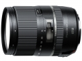

器材库 > APS画幅镜头 > 16-300/3.5-6.3 Di II VC PZD MACRO

详细规格
镜头类型
广角变焦镜头
发布日期
2014-02-06
焦距
16mm-300mm
等效35mm画幅焦距
24.8mm-465mm
最大光圈
f/3.5-f/6.3
最小光圈
f/22-f/40
视角（对角）
82.2～5.3
镜头结构
16片/12组
非球面镜片
4片
光圈叶片
7片
最近对焦距离
39cm
最大放大倍率
0.345
驱动马达
PZD（超声波自动对焦马达）
滤镜口径
67mm
镜头卡口
Canon EF, Minolta/Konica-Minolta/Sony AF, Nikon AF
防抖
是
颜色
黑色
尺寸
75x99.5mm
重量
540g
木名2015-05-26 21:274.67 分
操作性 5.00耐用性 5.00性价比 4.00解像力 4.50色彩还原 4.50机械结构 5.00
abllm2014-11-12 23:014.42 分
操作性 5.00耐用性 4.50性价比 4.50解像力 4.00色彩还原 4.00机械结构 4.50
lflflf2014-06-19 09:214.25 分
操作性 4.50耐用性 4.50性价比 4.50解像力 3.50色彩还原 4.50机械结构 4.00
xdwa2014-06-19 09:174.33 分
操作性 5.00耐用性 4.50性价比 4.50解像力 4.00色彩还原 4.00机械结构 4.00
武汉黑豹2014-02-25 10:524.17 分
操作性 4.00耐用性 4.00性价比 5.00解像力 4.00色彩还原 4.00机械结构 4.00